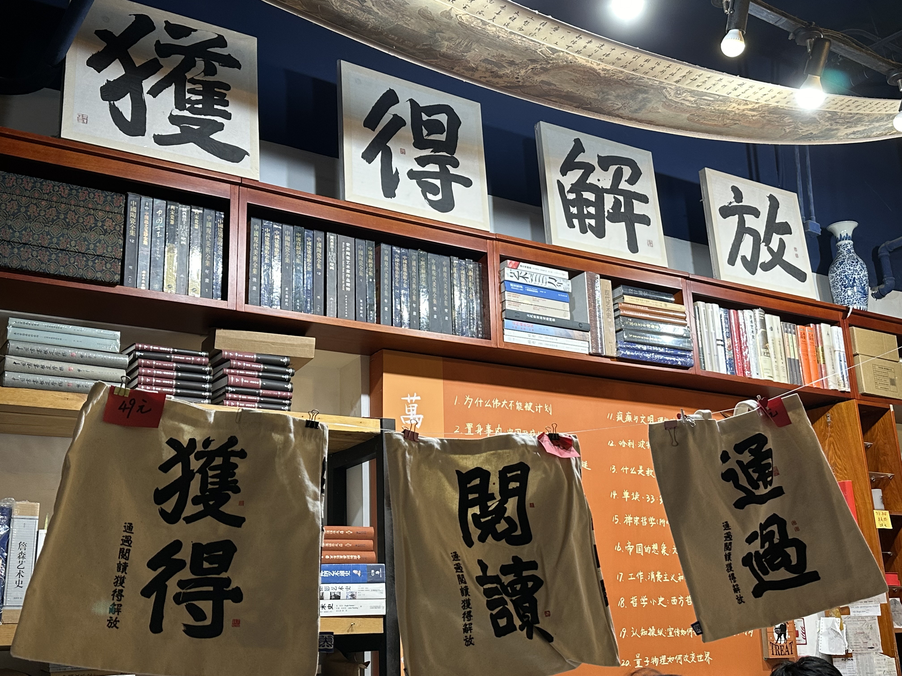

名称由来
万圣的名称来源于西方的鬼节——万圣节，其标识“蓝鬼”的原型便是印第安的鬼面具。但是后来，随着人们的口耳相传，“一万个圣人”的意思却显得与万圣更加贴近：“我宁愿把它理解成‘一万个圣人’，这一万个圣人就是万圣书架上的作者，在受益于这些圣人的读者当中，有我一号。”（诗人西川语）于是，万圣书园的英文店名便由原来的“Halloween”改为“All Sages Bookstore”。

经营特色
万圣书园的经营特色透露出，书店不仅卖书，还卖文化和思想，在做商业的同时也表达着社会关怀和文化批判。万圣是最早设三农问题专架的，对称架是城市专架，特别是城镇化、城市发展中的问题，居于两者中的是环境与发展专架，与中国这些年的发展变化中最重要的问题相契合。

醒客咖啡厅
万圣书园16年的历史中历经3次搬迁。最早位于北京西北三环中国人民大学附近。1994年三环路改造，万圣被迫迁址北京大学东门外的成府街巷内。2001年，成府老街再遭拆迁，万圣第三次搬迁至成府路蓝旗营北大清华教师楼下。借迁址之机，万圣书园在店内开设了一间“醒客咖啡厅”（Thinker’s Cafe Bar），咖啡厅营业面积近400平米，其纯正的饮品和优雅的氛围已成为大学教授、学术思想家、工商界精英以及外国学者经常聚会的场所。刘苏里这样描述醒客与万圣之间的互动，“到我们这里买书的人很多彼此认识，而书店没有呆着说话的地方，醒客则提供了闲聊的场所。很多买书人有这样的毛病，买来的书立即要翻翻，而挑书已经够累了，如果能踏踏实实地来壶茶，来杯咖啡，听着音乐翻着书，岂不惬意？还有万圣常年举办一些跟书有关的活动，醒客也提供了一个文化界交流的场所。”